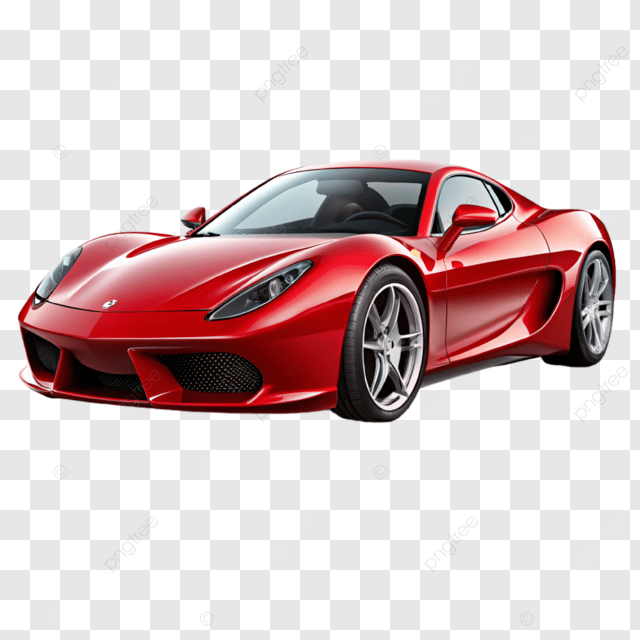

sobre tema
Olá, Meu nome é Erick Goudard e hoje vou falar sobre carros esportivos. Os carros esportivos são conhecidos por serem rápidos, potentes e terem um design moderno. Eles possuem motores potentes e são feitos para ter um bom desempenho nas estradas e nas pistas. Algumas marcas famosas de carros esportivos são Ferrari, Lamborghini, Porsche e McLaren. Hoje, os carros esportivos são conhecidos pela velocidade, potência, tecnologia e design moderno. Alguns modelos também utilizam motores híbridos ou elétricos.
Eu escolhi esse assunto porque eu gosto muito de carros esportivos. Sempre achei muito interessante a velocidade, o design e a potência desses carros.
curiosidade
- Alguns carros esportivos chegam a mais de 300 km/h em condições específicas.
- O formato do carro é pensado para diminuir a resistência do ar e ajudar o veículo a ficar mais estável em alta velocidade.
- Muitas tecnologias usadas em carros esportivos foram desenvolvidas ou aperfeiçoadas nas pistas de corrida antes de chegarem aos carros de rua.
